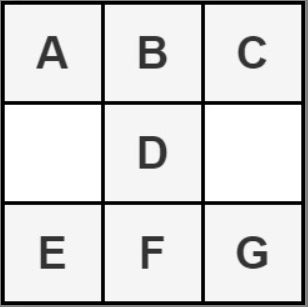

第 313 场周赛复盘。
排名 106 / 5445
1. 公因子的数目
给你两个正整数 a 和 b ，返回 a 和 b 的 公 因子的数目。
如果 x 可以同时整除 a 和 b ，则认为 x 是 a 和 b 的一个 公因子 。
思路
从 1 到 gcd(a, b) 遍历即可。
code
公因子的数目func gcd(a, b int) int { // assert a < b if a > b { return gcd(b, a) } if b % a == 0 { return a } return gcd(b % a, a) } func commonFactors(a int, b int) int { cnt := 0 for i := 1; i <= gcd(a, b); i++ { if a % i == 0 && b % i == 0 { cnt++ } } return cnt }
2. 沙漏的最大总和
给你一个大小为 m x n 的整数矩阵
grid。按以下形式将矩阵的一部分定义为一个 沙漏 ：

返回沙漏中元素的 最大 总和。
注意：沙漏无法旋转且必须整个包含在矩阵中。
思路
由于沙漏占据了 3×3 的矩阵空间，最不用思考的做法就是遍历沙漏的左上角即可。
code
沙漏的最大总和func maxSum(g [][]int) int { res := 0 for i := 0; i <= len(g)-3; i++ { for j := 0; j <= len(g[i])-3; j++ { sum := 0 sum += g[i][j] + g[i][j+1] + g[i][j+2] + g[i+1][j+1] + g[i+2][j] + g[i+2][j+1] + g[i+2][j+2] if sum > res { res = sum } } } return res }
3. 最小 XOR
给你两个正整数 num1 和 num2 ，找出满足下述条件的整数 x ：
- x 的置位数和 num2 相同，且
- x XOR num1 的值 最小
注意 XOR 是按位异或运算。
返回整数 x 。题目保证，对于生成的测试用例， x 是 唯一确定 的。
整数的 置位数 是其二进制表示中 1 的数目。
思路
若要使两个数按位异或所得结果最小，它们二进制中 1 的位置应尽可能一致，所以找题目中的 \(x\) 实际上就是安排其二进制中 ‘1’ 的位置。令 \(k(num1)\) 表示 \(num1\) 的置位数。则对于给定的 \(num1\) 与 \(k(x) = k(num2)\) ，只有以下三种情况：
\(k(num1) = k(num2)\)：则 \(x=num1\) 时 \(x\ XOR\ num1\) 最小
\(k(num1) < k(num2)\)：\(k(num1)\) 个 ‘1’ 与 \(num1\) 中的 ‘1’ 相互抵消后，还剩下 \(k(num2) - k(num1)\) 个 ‘1’ 未安排位置，这部分应尽量"靠左"，并且不与 \(num1\) 中 ‘1’ 的位置冲突。
例如，当 \(num1=10, k(num2)=3\) 时，\(num1=(1010)_2\)。首先能够得到 \(x=(1\_1\_)_2\)，最后一个 ‘1’ 的位置显然易见，应该放在最右边，故得到 \(x = (1011)_2\)
- \(k(num1) > k(num2)\)：\(x\) 的值即保留 \(num1\) 右侧 \(k(num2)\) 个 ‘1’ 的结果。
code
最小 XORfunc k(num int) int { res := 0 for num > 0 { res += num & 1 num >>= 1 } return res } func minimizeXor(num1 int, num2 int) int { cnt1, cnt2, x := k(num1), k(num2), num1 if cnt1 > cnt2 { p := 1 cnt1 -= cnt2 // x 为 num1 去掉低 cnt1-cnt2 位 1 for cnt1 > 0 { if x & p > 0 { x -= p cnt1-- } p <<= 1 } } else if cnt1 < cnt2 { p := 1 cnt2 -= cnt1 // x 为 num1 再加上 cnt2-cnt1 位 1 for cnt2 > 0 { if x & p == 0 { x += p cnt2-- } p <<= 1 } } return temp }
4. 对字母串可执行的最大删除数
给你一个仅由小写英文字母组成的字符串 s 。在一步操作中，你可以：
- 删除 整个字符串 s ，或者
- 对于满足 1 <= i <= s.length / 2 的任意 i ，如果 s 中的 前 i 个字母和接下来的 i 个字母 相等 ，删除 前 i 个字母。
例如，如果 s = "ababc" ，那么在一步操作中，你可以删除 s 的前两个字母得到 "abc" ，因为 s 的前两个字母和接下来的两个字母都等于 "ab" 。
返回删除 s 所需的最大操作数。
思路
考虑操作 2，删除前 i 个字母后还剩下长为 len(s)-i 的新字符串，我们要接着对新字符串执行同样的删除操作。这就是一个递归步骤，并且我们的递归是二叉树状的——每个 i 都需要考虑删 or 不删。
那么很容易想到用动态规划。定义 dp[i] 为删除 s[i-1:] 所需最大操作数，那么对于任意 1 ≤ i < j ≤ len(s)-1，如果 s[i:j] == s[j:2*j-i]，则 dp[i] = max(dp[i], dp[j] + 1)
code
对字母串可执行的最大删除数func deleteString(s string) int { n := len(s) dp := make([]int, n) // dp[i]: s[i:] 所需最大删除数 for i := n-1; i >= 0; i-- { dp[i] = 1 l := n-i for j := i+1; j <= i+l/2; j++ { if temp[i:j] == temp[j:2*j-i] && dp[i] < dp[j] + 1 { dp[i] = dp[j] + 1 } } } return dp[0] }